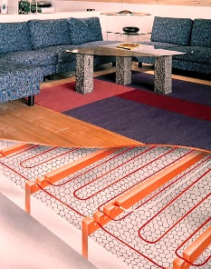

Качественный электромонтаж в Санкт-Петербурге и ленобласти, стаж 12 лет. Частный электрик, недорого и качественно.
Тел. 8 904 642 08 57 Николай.

Монтаж тёплого электрического пола, фото и цены.
Теплый пол является достаточно распространенным прибором. В зависимости от мощности его можно использовать как дополнительный или самостоятельный отопительный прибор.
Теплый пол может быть также использован совместно с ковролином, ламинатом и даже такими материалами как паркетная доска.
Сколько стоит сделать монтаж тёплого электрического пола?
|
Площадь электрического тёплого пола в кв. м. |
Цена за монтаж под ключ в руб. |
|
До 10 кв. м. |
От 400 |
|
20 |
330 |
|
30 |
280 |
|
До 40 кв. м. |
250 |
|
От 40 кв. м. |
200 руб. |
Существует два способа обогрева, положенных в основу системы теплый пол:
Электрические тёплые полы.
-электрический – нагрев осуществляется при прохождении электрического тока через кабель, выполненный из материала с высоким удельным сопротивлением;
-водяной – нагрев осуществляется при прохождении горячего теплоносителя (воды) по трубам, уложенным в стяжке пола.
Использование, какого-либо типа теплого пола имеет свои достоинства и недостатки, и его выбор осуществляется с учетом, как личных предпочтений, так и технологии монтажа и условий эксплуатации.
Электрический теплый пол.
Основными достоинствами этой системы обогрева являются:
- простота выполнения монтажных работ (греющий кабель раскладывается на ровной поверхности и временно закрепляется монтажной лентой, затем заливается цементной стяжкой);
- не требует большой толщины стяжки;
- подключение осуществляется к домашней электрической сети;
- точность регулирования температуры;
- использование встроенного в регулятор температуры таймера позволяет осуществлять включение и выключение теплого пола в определенном временном режиме.
Недостатки электрического теплого пола в первую очередь связаны с обеспечением электробезопасности:
- перед подключением теплого пола необходимо хотя бы ориентировочно оценить возможности существующей проводки;
- теплый пол обязательно должен быть подключен к контуру защитного заземления;
- перед началом монтажных работ необходимо четко представлять взаимное расположение всех элементов системы (не допускается наращивание проводов, подключающих датчик к терморегулятору).
Водяной теплый пол.
Использование в качестве системы подогрева водяных теплых полов подразумевает подключение их к контуру, по которому циркулирует вода. В условиях городской квартиры этим контуром будет магистраль централизованного горячего водоснабжения или отопительные трубы, что делать категорически запрещается.
Поэтому основной областью применения водяного теплого пола являются частные дома, где вода подогревается в локальной установке, и при помощи циркуляционного насоса прокачивается через отопительный контур.
Так как нагрев в данном случае осуществляется при помощи воды, то электропотребление дома, в целом, будет заметно меньше, чем при использовании электрического теплого пола.
При монтаже теплого пола, независимо от его вида, надо помнить ряд важных моментов:
- необходимо исключить или по максимуму уменьшить потери тепла, образующиеся при нагреве стяжки и перекрытия вниз. Другими словами теплый пол должен греть вверх и в стороны. Этого легко добиться, если монтаж греющих элементов вести по слою теплоизоляции. Еще более лучшие результаты можно получить, используя фольгированную теплоизоляцию (при монтаже фольга обращена вверх);
- при монтаже недопустимо взаимного пересечения греющего контура с самим собой;
- перед началом заливки стяжки рекомендуется зарисовать схему расположения витков греющего кабеля или водяной трубы. Это в дальнейшем может значительно облегчить жизнь, если возникнет необходимость проведения ремонта;
- не рекомендуется закладывать греющий контур в местах, запланированных под установку стационарной мебели (шкаф купе, стационарные кухонные стойки и т.п.).
Общим достоинством, присущим обоим видам теплых полов и обеспечившим им столь широкую популярность, является равномерный прогрев всего помещения по высоте, чем не могут похвастаться другие системы обогрева.
 Поменять проводку в квартире.
Поменять проводку в квартире. Сколько будут стоить материалы.
Электрика в загородном доме стоимость работ.

Расценки на электропроводку квартир.Замена проводки в хрущевке.
Электромонтаж в частном доме.
Электрика в загородном доме.
Сколько стоит замена электропроводки в двухкомнатной квартире?.
Электрик в новостройку однокомнатная квартира недорого.

Сколько стоит поменять электропроводку в 3-х комнатной квартире.